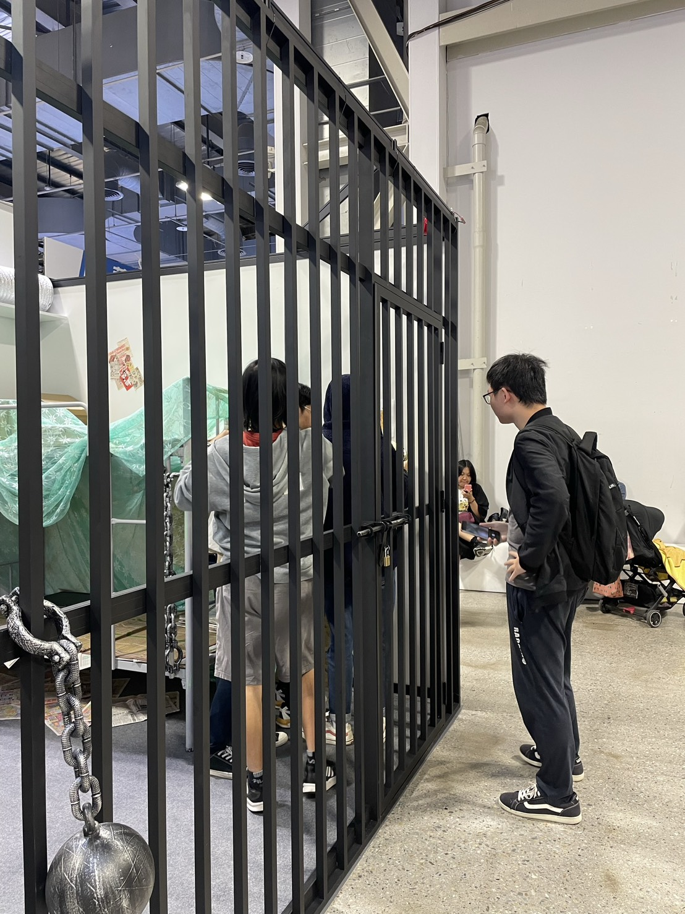
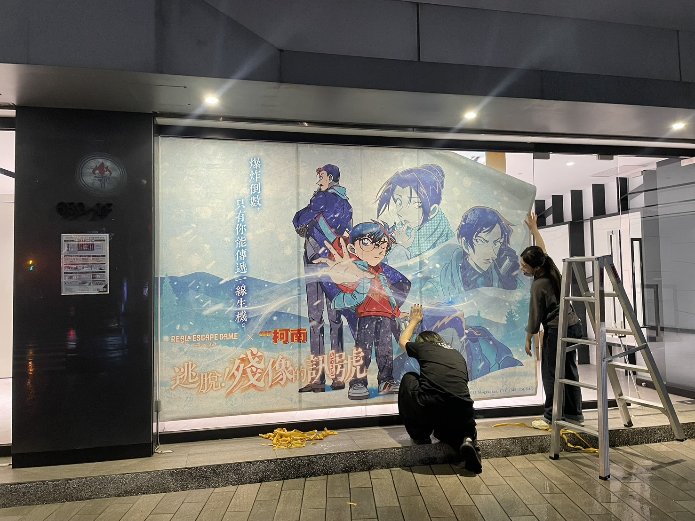
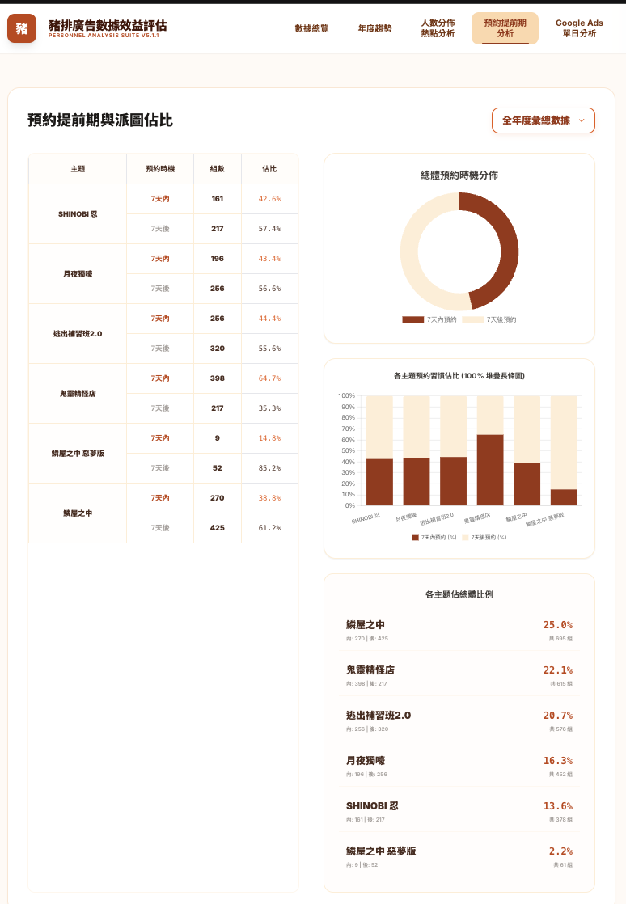

Selected Work
精選案例

實境解謎遊戲《鱗屋之中》
三階段、逾 40 人的觀察式測試，發現玩家心理模型與非線性設計的認知衝突，以線性入口包裹非線性玩法——上市至今評分穩定維持 4.8–4.9 顆星。
查看案例
G-EIGHT 遊戲展展場規劃
三年從封閉攤位迭代至跨 14 家廠商的展場實境解謎，以「直播感」格柵設計把選擇權還給觀眾，來店轉化率提升 8%。
查看案例
《名偵探柯南》IP 實境活動執行
服務藍圖規範百人場域的人員站位與動線，三情境售票預測模型因應跨城市差異，累計動員 7,000 名玩家，滿意度 4/5。
查看案例
教育部易讀版親職教育手冊
以包容性設計洞察切入政府標案，兩週內完成提案，打破長年壟斷格局，取得 273 萬教育部採購標案。
查看案例
廣告成效數據分析 Dashboard
整合預約系統、Google Ads、廣告費用三方數據，以 Gemini 建構動態 Dashboard，特定平台成本降低 10%、ROAS 提升至 3–4。
查看案例